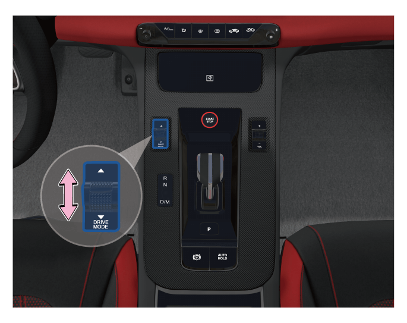

“4+X模式”为四种驾驶模式+用户自定义驾驶模式，分别为ECO(经济）、COMFORT(舒适）、SPORT（运动）、SPORT+（极速）及DIY（自定义）驾驶模式。选择对应驾驶模式后，组合仪表上同步显示驾驶模式信息。
驾驶模式切换

根据所选的驾驶模式不同，以下车辆特性会发生变化：
– 动力驱动系统
– ESP车身电子稳定系统
– 方向盘转向手力
– 排气声浪
– 智能空调控制
– 仪表显示氛围和主题
– 氛围灯颜色和律动开关等
驾驶模式记忆开关
–如果驾驶模式记忆开关①为关闭状态，当发动机启动时，驾驶模式的ECO将启用。
–如果驾驶模式记忆开关①为开启状态，当发动机启动时，之前选定的驾驶模式将启用。
驾驶模式切换方法
中控实体拨钮切换

–通过上/下拨动拨钮，可在“ECO→COMFORT→Sport→Sport+→DIY......”渐次循环跳动，选定目标驾驶模式。
中控模式界面切换
1.通过音响主机左侧智能卡片区的“驾驶模式卡片”跳转至驾驶模式应用界面，点击软按键选定驾驶模式。

2.点击桌面左侧系统导航栏的菜单键
用户进入驾驶模式界面后，点击“当前模式设置”进入驾驶模式设置，可设置当前驾驶模式下的各系统参数：
– 动力系统特性
– 方向盘转向力
– 排气声浪
– HMI显示模式
– 空调舒适曲线
– 音乐律动模式
– 自定义氛围灯颜色
— 页面到底了 —